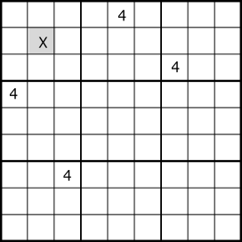

●Hidden Single
「Houseを構成するセル群の中で、ある数字Nを候補に持つのが唯一のセルのとき、そのセルは数字Nと確定する」という方法です。
左の例では X=4 に確定します。
○問題例
各セルの赤で表示した数字は、行・列・ブロックのいずれかのhouseに関して唯一であり、確定する。
...6.83....7..45..6..73.428.6.....13..4...6.....3..2.7518.2..3.4.3..6...296...7..
Hidden Singleの解析プログラムは、3.1 Last Digitとほぼ同じで、 Last Digitが全ての数字について列挙するのに対し、Hidden Singleは個々の数字を指定してセルを列挙し、それが唯一のセルである箇所を探します。
○解析プログラム Hidden Single
public class SimpleSingleGen: AnalyzerBaseV2{
public bool HiddenSingle( ){
bool SolFond=false;
for( int no=0; no<9; no++ ){
int noB=1<<no;
for( int tfx=0; tfx<27; tfx++ ){
if( pBDL.IEGetCellInHouse(tfx,noB).Count()==1 ){
SolFond=true;
var P=pBDL.IEGetCellInHouse(tfx,noB).First();
if(P.FreeBC==1) continue;
P.FixedNo=no+1;
if( !MltSolOn ) goto LFond;
}
}
}
LFond:
if(SolFond){
SolCode=1;
Result="Hidden Single";
if( SolInfoDsp ) ResultLong="Hidden Single";
AnMan.SnapSaveGP(); //■SimpleSingleGen は、SnapSaveGPの対象外
return true;
}
return false;
}
}